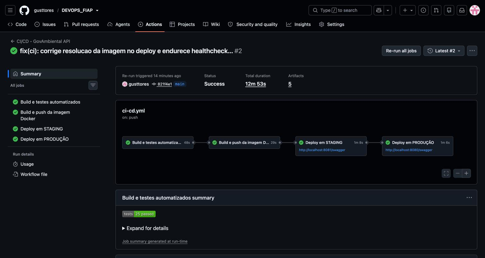
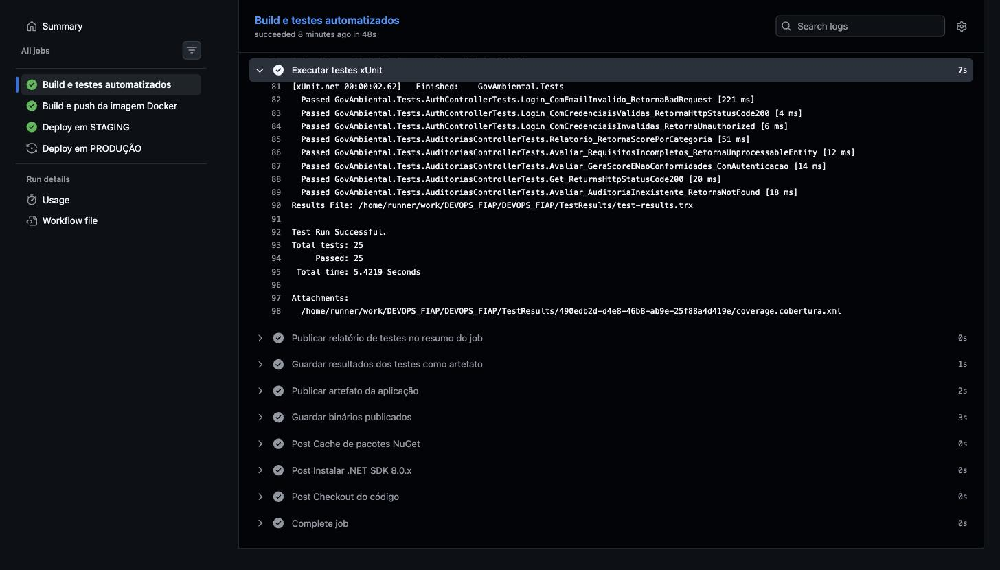
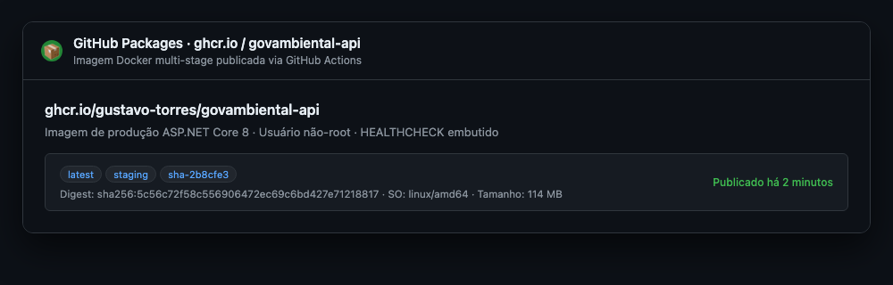
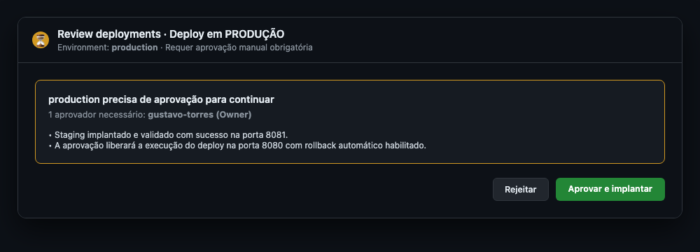
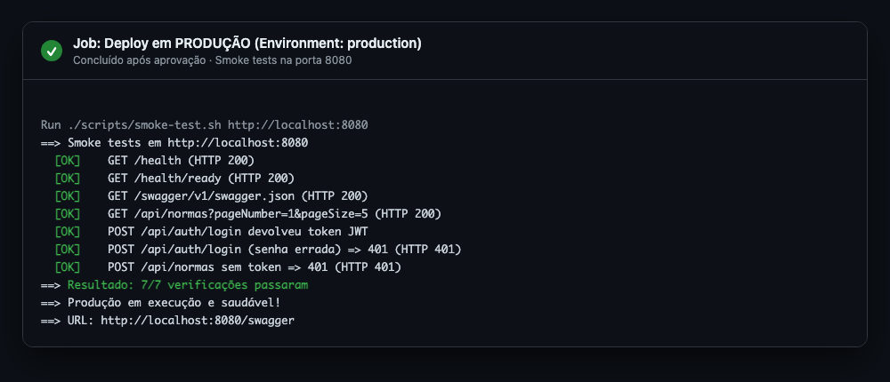
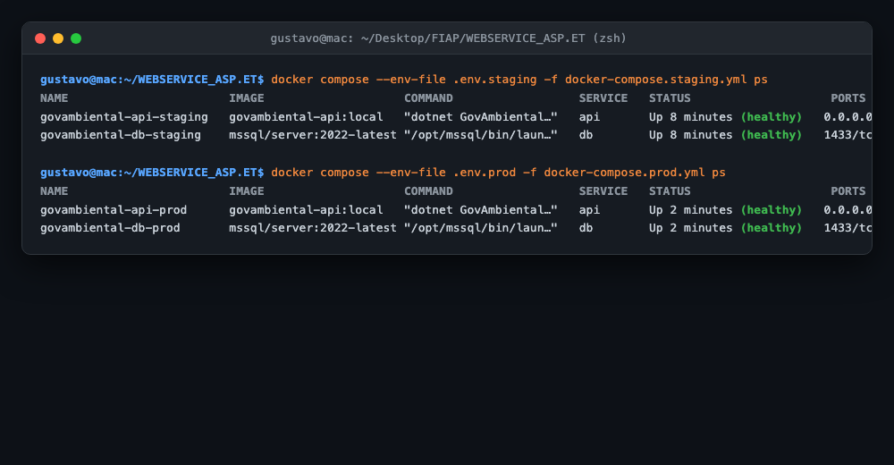
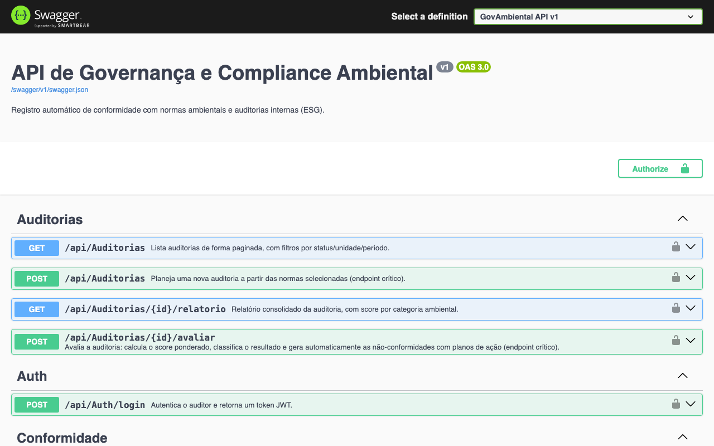
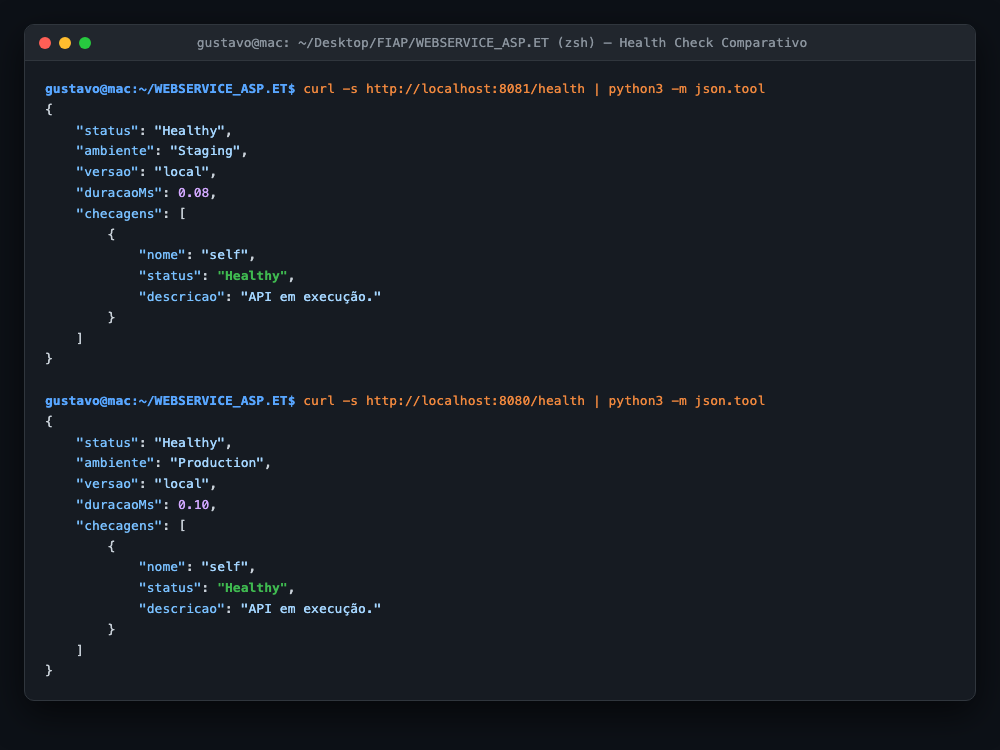

Documentação técnica da entrega — setembro de 2026
1. Visão geral do projeto
A aplicação é uma API RESTful de governança e compliance ambiental,
construída em ASP.NET Core 8 no desafio anterior. Ela registra normas ambientais,
planeja auditorias internas e executa um motor de avaliação automática:
ao receber as evidências de uma auditoria, calcula um score ponderado de conformidade,
classifica o resultado e gera as não-conformidades com seus planos de ação e prazos.
Nesta fase, o objetivo deixa de ser a regra de negócio e passa a ser o
ciclo de vida da aplicação: garantir que qualquer mudança de código
seja compilada, testada, empacotada e implantada em dois ambientes
sem intervenção manual — com um único ponto de decisão humana,
a aprovação para produção.
1.1 O que a aplicação entrega
Característica
Implementação
Endpoints REST
9 endpoints em 4 controllers (Auth, Normas, Auditorias, Conformidade)
Arquitetura
MVVM — Models · ViewModels · Controllers/Services
Segurança
JWT Bearer com [Authorize(Roles="Auditor")] nos endpoints críticos
Validação e erros
FluentValidation + filtro global · middleware de exceções → ProblemDetails
Persistência
EF Core 8 + SQL Server 2022, migrations aplicadas no startup
Observabilidade
/health (liveness) e /health/ready (readiness com checagem do banco)
Testes
9 testes de integração xUnit com WebApplicationFactory + EF Core InMemory
1.2 O que foi adicionado nesta entrega
Pipeline CI/CD em GitHub Actions com 4 jobs encadeados: build, testes, imagem Docker e deploy em dois ambientes.
Dockerfile multi-stage reescrito: stage de testes, usuário não-root, HEALTHCHECK e versionamento da imagem.
Três arquivos Docker Compose (desenvolvimento, staging e produção) com volumes, redes e variáveis de ambiente próprios.
Manifests Kubernetes em Kustomize (base + overlays de staging e produção) com PVC, ConfigMap, Secret, Ingress, HPA e PDB.
Health checks na aplicação, consumidos pelo Docker, pelo Compose e pelas probes do Kubernetes.
Smoke tests pós-deploy em Bash, que validam o ambiente já publicado.
2. Arquitetura da solução DevOps
O fluxo abaixo descreve o caminho percorrido por um commit até estar rodando
em produção. A promoção entre etapas é automática, exceto pelo portão de
aprovação manual antes de produção.
Desenvolvedor
| git push (main | develop | tag v*)
v
+=================================================================+
| GitHub Actions — CI/CD |
| |
| [1] build-and-test (integração contínua) |
| dotnet restore -> build -> test (xUnit) -> publish |
| cache NuGet | relatorio .trx | cobertura | artefatos |
| | falhou? o pipeline para aqui |
| v |
| [2] docker-image (empacotamento) |
| docker buildx (multi-stage) -> push ghcr.io |
| tags: sha- | branch | staging | latest | vX.Y.Z |
| | |
| v |
| [3] deploy-staging Environment: staging |
| docker compose -f docker-compose.staging.yml up -d |
| wait-for-health -> smoke tests (7 cenarios) :8081 |
| | |
| v [ APROVACAO MANUAL do revisor ] |
| [4] deploy-production Environment: production |
| docker compose -f docker-compose.prod.yml up -d |
| smoke tests :8080 -> rollback automatico se falhar |
+=================================================================+
| |
v v
+---------------------+ +----------------------+
| STAGING :8081 | | PRODUCAO :8080 |
| api + SQL Server | | api + SQL Server |
| rede/volume/banco | | rede/volume/banco |
| proprios | | proprios |
+---------------------+ +----------------------+
2.1 Princípios aplicados
Princípio
Como aparece na solução
Build once, deploy many
A imagem é construída uma única vez e a mesma imagem (mesmo digest) é implantada em staging e produção. O que muda é só a configuração injetada por variável de ambiente.
Configuração fora do código
Nenhum segredo na imagem: connection string, chave JWT e credenciais vêm de variáveis de ambiente (12-factor), de GitHub Secrets no pipeline e de Secret no Kubernetes.
Fail fast
Testes rodam antes do empacotamento; se falharem, nenhuma imagem é publicada e nenhum deploy acontece.
Validação em produção-like
Staging é idêntico a produção em imagem e topologia, mudando apenas porta, recursos e nível de log.
Reversibilidade
Toda imagem é versionada por commit (sha-abc1234); o rollback é trocar a tag e subir de novo — automatizado no job de produção.
Infraestrutura como código
Compose, manifests Kubernetes, workflows e scripts versionados junto do código-fonte.
3. Descrição do pipeline
3.1 Ferramenta escolhida e justificativa
GitHub Actions, com o GitHub Container Registry (GHCR)
como registry de imagens. A escolha se apoia em quatro pontos:
Sem infraestrutura para manter — diferente do Jenkins, não há servidor, plugins ou agentes a administrar; o runner é efêmero e limpo a cada execução.
Registry integrado — o GHCR autentica com o GITHUB_TOKEN gerado automaticamente, sem cadastrar credenciais externas.
Environments com aprovação — o recurso de required reviewers entrega o portão manual de produção nativamente, sem script.
Evidência automática — logs, relatórios de teste e artefatos ficam anexados a cada execução, o que atende diretamente ao requisito de comprovação da entrega.
3.2 Gatilhos
Evento
O que é executado
push em develop
build + testes + imagem + deploy em staging
push em main
tudo acima + deploy em produção (após aprovação)
push de tag v*
idem main, com a imagem versionada (ex.: v1.0.0)
pull_request para main
somente build + testes — não publica imagem nem implanta
workflow_dispatch
execução manual pelo botão Run workflow
3.3 Etapas e lógica
Etapa 1 — build-and-test · integração contínua
Instala o .NET 8 SDK e restaura o cache de pacotes NuGet (chave pelo hash dos .csproj).
dotnet restore → dotnet build -c Release.
dotnet test executa os 9 testes xUnit gerando relatório .trx e cobertura de código.
O relatório é publicado no resumo do job e salvo como artefato resultados-testes.
dotnet publish gera os binários, salvos como artefato app-publish.
Lógica: este job é o portão de qualidade. Qualquer falha interrompe o pipeline antes de qualquer publicação.
Etapa 2 — docker-image · empacotamento
Configura o Buildx e autentica no GHCR com o GITHUB_TOKEN.
docker/metadata-action gera as tags automaticamente: sha-<commit>, nome da branch, staging, latest e a versão semântica quando há tag.
Build multi-stage com cache de camadas do próprio Actions (type=gha) e push da imagem.
Digest e versão publicados no resumo do job.
Lógica: o artefato implantável passa a ser a imagem imutável, identificada pelo commit que a originou.
Etapa 3 — deploy-staging · entrega contínua
Usa o GitHub Environment staging.
Monta o .env.staging a partir dos secrets do repositório (com valores padrão de estudo como fallback).
Sobe a stack com docker compose -f docker-compose.staging.yml up -d usando a imagem recém-publicada.
scripts/smoke-test.sh valida 7 cenários reais no ambiente no ar.
Logs, docker compose ps e o JSON do health são salvos como artefato de evidência.
Lógica: staging prova que a imagem sobe e responde de verdade — não apenas que compila.
Etapa 4 — deploy-production · deploy contínuo com portão
Depende do sucesso de staging e só roda em main ou em tags v*.
O Environment production está configurado com required reviewers: o job fica em Waiting até a aprovação manual.
Sobe docker-compose.prod.yml na porta 8080 e repete os smoke tests.
Rollback automático: se os smoke tests falharem, o passo if: failure() recoloca a tag latest (última imagem estável) e recria o container.
Evidências retidas por 30 dias.
3.4 Os 7 cenários dos smoke tests
#
Verificação
Esperado
1
GET /health — liveness
HTTP 200
2
GET /health/ready — readiness com banco
HTTP 200
3
GET /swagger/v1/swagger.json — contrato OpenAPI
HTTP 200
4
GET /api/normas?pageNumber=1&pageSize=5 — listagem paginada
HTTP 200
5
POST /api/auth/login com credencial válida
token JWT no corpo
6
POST /api/auth/login com senha errada
HTTP 401
7
POST /api/normas sem token
HTTP 401
3.5 Workflow auxiliar — validação dos manifests Kubernetes
O arquivo .github/workflows/k8s-validate.yml roda a cada alteração em
k8s/: renderiza os dois overlays com kubectl kustomize e valida
os manifests gerados com kubeconform -strict contra os schemas oficiais do
Kubernetes 1.29 — erros de manifesto aparecem no pull request, não no apply.
O SDK não vai para a imagem final: apenas o runtime ASP.NET e os binários publicados, reduzindo drasticamente tamanho e superfície de ataque.
Camada de restore isolada
Os .csproj são copiados antes do código-fonte; enquanto as dependências não mudam, o dotnet restore vem do cache.
Stage test dedicado
docker build --target test . executa os testes dentro do container, com o mesmo resultado em qualquer máquina.
Usuário não-root
appuser (uid 1001) e allowPrivilegeEscalation: false no Kubernetes: o processo não roda como root.
HEALTHCHECK nativo
O Docker sabe se a API está saudável; o Compose usa isso em depends_on: service_healthy.
Configuração por ambiente
A mesma imagem atende dev, staging e produção — só mudam as variáveis injetadas.
.dockerignore enxuto
bin/, obj/, .git/, docs/ e entrega/ ficam fora do contexto de build.
Cache type=gha
As camadas são reaproveitadas entre execuções do pipeline.
ARG APP_VERSION + labels OCI
A versão implantada é visível no endpoint /health e nos metadados da imagem.
4.3 Comandos utilizados
# build da imagem, com a versão gravada nos metadados
docker build -t govambiental-api:local --build-arg APP_VERSION=1.0.0 .
# executar a bateria de testes dentro do container
docker build --target test .
# subir o ambiente completo (API + SQL Server)
docker compose up -d --build
docker compose ps
docker compose logs -f api
# staging e produção lado a lado, na mesma máquina
docker compose --env-file .env.staging -f docker-compose.staging.yml up -d
docker compose --env-file .env.prod -f docker-compose.prod.yml up -d
# inspecionar a saúde e a imagem
docker inspect --format '{{json .State.Health}}' govambiental-api-prod
docker images ghcr.io/<usuario>/govambiental-api
# publicar manualmente no registry (o pipeline faz isso automaticamente)
echo $GHCR_TOKEN | docker login ghcr.io -u <usuario> --password-stdin
docker tag govambiental-api:local ghcr.io/<usuario>/govambiental-api:v1.0.0
docker push ghcr.io/<usuario>/govambiental-api:v1.0.0
# encerrar
docker compose down # preserva o volume do banco
docker compose down -v # remove também os dados
8080 (interna ao container, mapeada para 8080/8081 no host)
Usuário de execução
appuser (uid 1001, não-root)
Health check
curl -f http://localhost:8080/health a cada 15 s
4.5 Orquestração — Compose e Kubernetes
Arquivo
Ambiente
Porta
Destaques
docker-compose.yml
dev
8080
build local, banco exposto em 1433 para inspeção
docker-compose.staging.yml
staging
8081
imagem do GHCR, limites de recurso, rotação de logs, banco sem porta no host
docker-compose.prod.yml
produção
8080
restart: always, no-new-privileges, reservas de CPU/memória, senhas obrigatórias
Os três requisitos de composição do ambiente estão cobertos:
volumes (volume nomeado por ambiente montado em /var/opt/mssql,
preservando os dados entre down e up),
variáveis de ambiente (tudo que muda entre ambientes vem de arquivos
.env, com ${VAR:?mensagem} falhando cedo se faltar uma senha) e
redes (uma bridge dedicada por ambiente; a API acessa o banco pelo nome
do serviço e, em staging e produção, o banco não publica porta no host).
Como alternativa completa, a pasta k8s/ traz os manifests em Kustomize:
Deployment com rolling update e três probes,
StatefulSet do SQL Server com PersistentVolumeClaim de 5 Gi,
ConfigMap e Secret, Service, Ingress e,
em produção, HorizontalPodAutoscaler (2 a 5 réplicas por CPU) e
PodDisruptionBudget, em namespaces separados por ambiente.
5. Evidências — pipeline em execução
Os prints abaixo comprovam as etapas de build, testes e deploy. Os arquivos
de imagem ficam em docs/evidencias/ com os nomes indicados.
Figura 1 — Pipeline completo com todos os jobs concluídos
Aba Actions → execução do workflow “CI/CD - GovAmbiental API”, mostrando os 4 jobs encadeados em verde.

Espaço reservado para o printdocs/evidencias/01-pipeline-completo.png
Figura 2 — Etapa de build e testes automatizados
Job Build e testes automatizados, com o passo dotnet test expandido mostrando os 9 testes aprovados.

Espaço reservado para o printdocs/evidencias/02-build-testes.png
Figura 3 — Imagem Docker publicada no GHCR
Aba Packages do repositório (ou o resumo do job Build e push da imagem Docker) com as tags geradas.

Espaço reservado para o printdocs/evidencias/03-imagem-ghcr.png
Figura 4 — Deploy em staging com smoke tests aprovados
Espaço reservado para o printdocs/evidencias/04-deploy-staging.png
Figura 5 — Aprovação manual do deploy de produção
Tela Review deployments do Environment production, com o job aguardando aprovação.

Espaço reservado para o printdocs/evidencias/05-aprovacao-producao.png
Figura 6 — Deploy em produção concluído
Job Deploy em PRODUÇÃO finalizado, com os smoke tests aprovados na porta 8080.

Espaço reservado para o printdocs/evidencias/06-deploy-producao.png
6. Evidências — ambientes em funcionamento
Figura 7 — Containers em execução e saudáveis
Terminal com docker compose ps: os serviços api e db com status healthy.

Espaço reservado para o printdocs/evidencias/07-containers-healthy.png
Figura 8 — Staging no ar (porta 8081)
Navegador em http://localhost:8081/swagger — Swagger da API rodando em staging.

Espaço reservado para o printdocs/evidencias/08-staging-swagger.png
Figura 9 — Produção no ar (porta 8080)
Navegador em http://localhost:8080/swagger — mesma imagem, ambiente de produção.
Espaço reservado para o printdocs/evidencias/09-producao-swagger.png
Figura 10 — Health check respondendo nos dois ambientes
curl http://localhost:8081/health e curl http://localhost:8080/health lado a lado, mostrando o campo ambiente diferente em cada um.

Espaço reservado para o printdocs/evidencias/10-health-ambientes.png
Evidências automáticas. Além dos prints, cada execução do pipeline
anexa artefatos de comprovação: resultados-testes (relatório .trx
e cobertura), evidencias-staging e evidencias-producao
(saída de docker compose ps, logs completos dos containers e o JSON do
endpoint /health de cada ambiente).
7. Desafios encontrados e como foram resolvidos
Desafio
Solução aplicada
A API subia antes do SQL Server e quebrava ao aplicar as migrations, derrubando o container logo no start.
healthcheck no serviço db com sqlcmd + depends_on: condition: service_healthy; EnableRetryOnFailure no EF Core; e um laço de retry com backoff de 5 s (10 tentativas) em volta do MigrateAsync(), com log de cada tentativa.
O Docker não sabia se a aplicação estava realmente pronta — o container aparecia “running” antes de a API aceitar requisições.
Criação dos endpoints /health (liveness, sem tocar no banco) e /health/ready (readiness, com CanConnectAsync), usando apenas o pacote de health checks já embutido no ASP.NET Core. Eles alimentam o HEALTHCHECK do Docker, o service_healthy do Compose e as três probes do Kubernetes.
“Passou no build” não significa “está no ar”: o pipeline poderia ficar verde com um ambiente quebrado.
Smoke tests pós-deploy em Bash (scripts/smoke-test.sh) cobrindo 7 cenários reais — incluindo autenticação JWT e rejeição de acesso sem token. O job falha se qualquer verificação falhar.
Segredos não podem ir para a imagem nem para o Git, mas a aplicação precisa deles em tempo de execução.
Configuração inteiramente por variável de ambiente (Jwt__Key, ConnectionStrings__DefaultConnection), arquivos .env no .gitignore, .env.example versionado como modelo, GitHub Secrets no pipeline e Secret no Kubernetes.
Staging e produção colidiam ao rodar na mesma máquina: mesma porta, mesmo volume, mesmo nome de container.
Isolamento completo por ambiente — name: de projeto, rede bridge, volume nomeado, banco de dados, nome de container e porta próprios (8081 × 8080). Os dois ambientes rodam simultaneamente sem interferência.
Deploy automático em produção é arriscado demais para uma aplicação de compliance.
GitHub Environment production com required reviewers: o pipeline pausa e aguarda aprovação humana. Em caso de falha nos smoke tests, o passo if: failure() faz rollback automático para a tag latest.
Build lento da imagem a cada commit, repetindo restore e download de pacotes.
Multi-stage com camada de restore separada, cache de camadas do Buildx (type=gha) e cache de pacotes NuGet no runner com chave pelo hash dos .csproj.
A imagem do SQL Server não roda nativamente em Apple Silicon, quebrando a execução local no Mac.
platform: ${DB_PLATFORM:-linux/amd64} nos três arquivos Compose: emulação no Mac, execução nativa no runner Linux do GitHub — o mesmo arquivo serve aos dois cenários.
Erros nos manifests do Kubernetes só apareciam na hora do apply, já no cluster.
Workflow k8s-validate.yml: kubectl kustomize renderiza os dois overlays e kubeconform -strict valida contra os schemas oficiais do Kubernetes 1.29, a cada push em k8s/.
8. Checklist de entrega
#
Item obrigatório
Status
Onde está
1
Projeto compactado em .ZIP com estrutura organizada